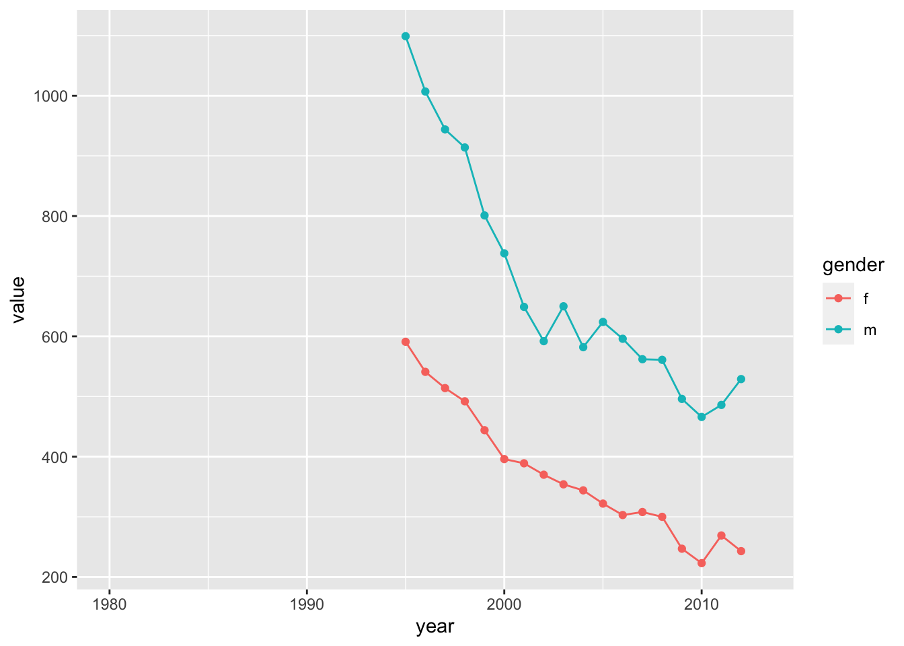

There are many cases in which your analysis pipeline needs to include steps to extract that data from the characters, rather than having to code it manually yourself.
This is the case with large datasets where important data is stored in column names or file names.
Dates in datasets are also often interpreted as characters in R.
In other cases, you might also conduct “text mining” analyses where you look for particular words and codes inside large amounts of documents, websites, etc.
R has different ways to deal with dates and texts, both in base R and in the tidyverse packages.
For this module, we will make use of two packages from the tidyverse family: stringr and lubridate:
library(tidyverse)
library(lubridate)Let’s take the presidential dataset that is included in
the ggplot2 package:
presidential## # A tibble: 12 × 4
## name start end party
## <chr> <date> <date> <chr>
## 1 Eisenhower 1953-01-20 1961-01-20 Republican
## 2 Kennedy 1961-01-20 1963-11-22 Democratic
## 3 Johnson 1963-11-22 1969-01-20 Democratic
## 4 Nixon 1969-01-20 1974-08-09 Republican
## 5 Ford 1974-08-09 1977-01-20 Republican
## 6 Carter 1977-01-20 1981-01-20 Democratic
## 7 Reagan 1981-01-20 1989-01-20 Republican
## 8 Bush 1989-01-20 1993-01-20 Republican
## 9 Clinton 1993-01-20 2001-01-20 Democratic
## 10 Bush 2001-01-20 2009-01-20 Republican
## 11 Obama 2009-01-20 2017-01-20 Democratic
## 12 Trump 2017-01-20 2021-01-20 RepublicanAs this is a pre-loaded package, you can see that the “start” and “end” dates of each president is already recognized as a “date” object:
class(presidential$start)## [1] "Date"This means that you can do things that you might expect to do with time data, like calculate the number of days between the start and end dates:
presidential$end - presidential$start## Time differences in days
## [1] 2922 1036 1886 2027 895 1461 2922 1461 2922 2922 2922 1461But let’s what happens if we were to import this dataset from a .csv format!
First, write the data as a .csv file…
write.csv(presidential, "data/presidential.csv", row.names = F)… then read it in, calling it something slightly different to make sure we can distinguish it from the original prepackaged dataset.
pres.dat=read.csv("data/presidential.csv")Now see what this looks like.
pres.dat## name start end party
## 1 Eisenhower 1953-01-20 1961-01-20 Republican
## 2 Kennedy 1961-01-20 1963-11-22 Democratic
## 3 Johnson 1963-11-22 1969-01-20 Democratic
## 4 Nixon 1969-01-20 1974-08-09 Republican
## 5 Ford 1974-08-09 1977-01-20 Republican
## 6 Carter 1977-01-20 1981-01-20 Democratic
## 7 Reagan 1981-01-20 1989-01-20 Republican
## 8 Bush 1989-01-20 1993-01-20 Republican
## 9 Clinton 1993-01-20 2001-01-20 Democratic
## 10 Bush 2001-01-20 2009-01-20 Republican
## 11 Obama 2009-01-20 2017-01-20 Democratic
## 12 Trump 2017-01-20 2021-01-20 RepublicanYou’ll notice that the “start” and “end” dates are now recognized as characters. This means that you can’t treat them like dates. For example, you wouldn’t be able to calculate the number of dates between start and end of the presidency:
pres.dat$end - pres.dat$start## Error in pres.dat$end - pres.dat$start :
## non-numeric argument to binary operatorYou can take a date-as-character to turn it into a date object either
in base R or using the lubridate package.
as.Date(pres.dat$start, format="%Y-%m-%d")## [1] "1953-01-20" "1961-01-20" "1963-11-22" "1969-01-20" "1974-08-09"
## [6] "1977-01-20" "1981-01-20" "1989-01-20" "1993-01-20" "2001-01-20"
## [11] "2009-01-20" "2017-01-20"In using the as.Date() function, you have to use the
format= argument to specify the format the date is in.
Here are the options to include in the format argument:
| Symbol | Meaning | Example |
|---|---|---|
| %d | day as a number (0-31) | 01-31 |
| %a | abbreviated weekday | Mon |
| %A | unabbreviated weekday | Monday |
| %m | month (00-12) | 00-12 |
| %b | abbreviated month | Jan |
| %B | unabbreviated month | January |
| %y | 2-digit year | 07 |
| %Y | 4-digit year | 2007 |
Note that you have to be specific and correct. For example, if you use “%y” instead of “%Y” when you have a four-digit year, the function will not be able to parse it:
as.Date(pres.dat$start, format="%y-%m-%d")## [1] NA NA NA NA NA NA NA NA NA NA NA NABut once you learn how to use this, it becomes easier.
Say you have your data in “month/date/year” format (common in the U.S.):
mdy_dates=c("5/17/1978", "3/23/2022")
as.Date(mdy_dates, format="%m/%d/%Y")## [1] "1978-05-17" "2022-03-23"lubridate
package.lubridate has a handy functions that simplify the
processing of converting dates-as-characters into date objects:
For example, since the start and end dates are in “year-month-date”
format, we can use a function called ymd():
ymd(pres.dat$start)## [1] "1953-01-20" "1961-01-20" "1963-11-22" "1969-01-20" "1974-08-09"
## [6] "1977-01-20" "1981-01-20" "1989-01-20" "1993-01-20" "2001-01-20"
## [11] "2009-01-20" "2017-01-20"To see that this actually converts these character strings into dates, let’s try calculating the number of days of each presidency:
ymd(pres.dat$end) - ymd(pres.dat$start)## Time differences in days
## [1] 2922 1036 1886 2027 895 1461 2922 1461 2922 2922 2922 1461Now let’s try the “month/date/year” format. We’ll re-create the simple character string from before:
mdy_dates=c("5/17/1978", "3/23/2022")Since the year, month and date are in a different order now, the
ymd() function cannot process this:
ymd(mdy_dates)## Warning: All formats failed to parse. No formats found.## [1] NA NABut we can simply use a friendly alternative function,
mdy():
mdy(mdy_dates)## [1] "1978-05-17" "2022-03-23"Let’s start with a hypothetical example. What if I had named my data files with the date:
filename="data_20220927.csv"Now, let’s say I wanted to extract the dates from file names as part of my analyses. The basic way I might do this is through “text parsing”–i.e., extracting parts of text to get useful data. Here, I know that my file name has useful information (i.e., the year, month and date).
I’m going to show you three ways to do this, using base R and the
stringr package for each.
One way to get the date from the file name is to just extract the part of this character string that contains the information I want.
If I just **count the start and stop position* of the information within this character string, I can just extract that part of the string (i.e., substring). In this case, the date (“20200927”) goes from position 6 to position 13 in this character.
I can use the substr() function in base R to do
this:
substr(filename, start=6, stop=13)## [1] "20220927"Alternatively, I can use the str_sub() function in
stringr in the same way.
str_sub(filename, start=6, end=13)## [1] "20220927"… and once I have this substring, I can convert this into a date object.
I can do this in base R, using the as.Date() function.
To use this function, you need to specify the format in which the
character string encodes the date information. Here, since it is a
4-number code for year, followed by month and date, you would put
“%Y%m%d”.
as.Date(substr(filename, start=6, stop=13), format="%Y%m%d")## [1] "2022-09-27"Alternatively, you can use the ymd() function in
lubridate. This function is a bit smarter in that it is more
flexible–it can parse the text correctly as long as it’s in some form of
year-month-date order. (If it was in month-date-year, you would use the
mdy() function).
filename %>% str_sub(start=6, end=13) %>% ymd()## [1] "2022-09-27"Extracting substrings is probably the most straightforward way to parse text. HOWEVER, you can only do this if the text is formatted in a way that makes the position of your information of interest predictable
You could also extract the date from the file name by substituting blanks for the parts that you don’t want (i.e., “data_” and “.csv”).
In base R, you can do this with gsub(). For example:
gsub("data_", "", filename) #this removes "data_" from the character string## [1] "20220927.csv"So you can string this together, then convert to date:
a=gsub("data_", "", filename) #remove the prefix
b=gsub(".csv", "", a) #remove the suffix
as.Date(b, format="%Y%m%d") #convert to date object## [1] "2022-09-27"Using the stringr function str_replace() in the
same way:
Let’s try using the pipe and str_replace() to get rid of
the first part of the file name:
filename %>% str_replace("data_", "")## [1] "20220927.csv"Using the same principle, we can string together the
str_replace() functions and convert the result to a date
object using ymd():
filename %>%
str_replace("data_", "") %>%
str_replace(".csv", "") %>%
ymd()## [1] "2022-09-27"Another option is to split the character string into multiple elements. You can specify the character you use as the marker for where you want to split the character string. This is a very powerful and flexible tool, though it requires you to have a good understanding of how to deal with lists… So it is probably best reserved for complex tasks that you can’t do with substrings or text replacement.
For example, if we split the file name at the underscore (“_“):
strsplit(filename, split=c("_"))## [[1]]
## [1] "data" "20220927.csv"strsplit(filename, split=c("."), fixed=T)## [[1]]
## [1] "data_20220927" "csv"a=strsplit(filename, split=c("_"))
a## [[1]]
## [1] "data" "20220927.csv"Now, the next step is to split the remaining string “20220927.csv” by the period (“.”). However, this is a bit challenging because R does not handle the character “.” simply as a period. To do this, you have to use the Regular Expression for a period, which is “\.”
strsplit(a[[1]], split=c("\\."))## [[1]]
## [1] "data"
##
## [[2]]
## [1] "20220927" "csv"b=strsplit(a[[1]], split=c("\\."))
b## [[1]]
## [1] "data"
##
## [[2]]
## [1] "20220927" "csv"b[[2]][1]## [1] "20220927"s=b[[2]][1]
as.Date(s, format="%Y%m%d") #convert to date object## [1] "2022-09-27"str_split_1(filename, pattern=c("_")) %>%
str_split(.,pattern=c("\\."))## [[1]]
## [1] "data"
##
## [[2]]
## [1] "20220927" "csv"From here, you can use the same process as the base R case to extract the number.
Finally, there may be cases where you don’t need to extract the whole information, but you simply need to know if the character string contains some pattern.
filenames_vector=c("data_20220927.csv", "data_20221121.csv", "data_20230103.csv", "data_20230308.csv")For example, let’s say you are scouring the file names for all files pertaining to the year 2022. Then, perhaps all you need to know is whether the file name contains “2022”.
You can find this out one of two ways.
The grepl() function will tell you TRUE or FALSE if the
character string does or does not contain the string you are looking
for:
grepl("2022", filenames_vector)## [1] TRUE TRUE FALSE FALSEIn contrast, grep() will return the position of the
elements that matched your pattern:
grep("2022", filenames_vector)## [1] 1 2Then, you can extract the file names that contain “2022”.
filenames_vector[grep("2022", filenames_vector)]## [1] "data_20220927.csv" "data_20221121.csv"Let’s do an example of how one might use text parsing in the process of data analysis.
For this example, we will use the who dataset, included
in tidyverse, which has data from the World Health Organization Global
Tuberculosis Report.
who## # A tibble: 7,240 × 60
## country iso2 iso3 year new_sp_m014 new_sp_m1524 new_sp_m2534 new_sp_m3544
## <chr> <chr> <chr> <dbl> <dbl> <dbl> <dbl> <dbl>
## 1 Afghani… AF AFG 1980 NA NA NA NA
## 2 Afghani… AF AFG 1981 NA NA NA NA
## 3 Afghani… AF AFG 1982 NA NA NA NA
## 4 Afghani… AF AFG 1983 NA NA NA NA
## 5 Afghani… AF AFG 1984 NA NA NA NA
## 6 Afghani… AF AFG 1985 NA NA NA NA
## 7 Afghani… AF AFG 1986 NA NA NA NA
## 8 Afghani… AF AFG 1987 NA NA NA NA
## 9 Afghani… AF AFG 1988 NA NA NA NA
## 10 Afghani… AF AFG 1989 NA NA NA NA
## # ℹ 7,230 more rows
## # ℹ 52 more variables: new_sp_m4554 <dbl>, new_sp_m5564 <dbl>,
## # new_sp_m65 <dbl>, new_sp_f014 <dbl>, new_sp_f1524 <dbl>,
## # new_sp_f2534 <dbl>, new_sp_f3544 <dbl>, new_sp_f4554 <dbl>,
## # new_sp_f5564 <dbl>, new_sp_f65 <dbl>, new_sn_m014 <dbl>,
## # new_sn_m1524 <dbl>, new_sn_m2534 <dbl>, new_sn_m3544 <dbl>,
## # new_sn_m4554 <dbl>, new_sn_m5564 <dbl>, new_sn_m65 <dbl>, …Also make sure to look at the help file for the dataset:
?whoFirst thing we see is that this data set is terribly wide. There are 60 columns, 56 of which contain data on counts of TB cases, and each of those 56 columns represents different combinations of method of diagnosis, gender and age group.
These column names are where a lot of the important information are, and what we might want to use as variables of interest.
So, let’s refresh our memory on how we can use the
pivot_longer() function to make this data into a “long
format”.
Start by using pivot_longer(), specifying that we want
to keep the first four columns as is:
who_long=who %>% pivot_longer(c(-country, -iso2, -iso3, -year))
who_long## # A tibble: 405,440 × 6
## country iso2 iso3 year name value
## <chr> <chr> <chr> <dbl> <chr> <dbl>
## 1 Afghanistan AF AFG 1980 new_sp_m014 NA
## 2 Afghanistan AF AFG 1980 new_sp_m1524 NA
## 3 Afghanistan AF AFG 1980 new_sp_m2534 NA
## 4 Afghanistan AF AFG 1980 new_sp_m3544 NA
## 5 Afghanistan AF AFG 1980 new_sp_m4554 NA
## 6 Afghanistan AF AFG 1980 new_sp_m5564 NA
## 7 Afghanistan AF AFG 1980 new_sp_m65 NA
## 8 Afghanistan AF AFG 1980 new_sp_f014 NA
## 9 Afghanistan AF AFG 1980 new_sp_f1524 NA
## 10 Afghanistan AF AFG 1980 new_sp_f2534 NA
## # ℹ 405,430 more rowsWe can see that this creates a “name” column, which has the column names we have pivoted, and a “value” column, which is where the count data goes (the first 10 country x year combo happens to not have data).
Ok, so using this, we are going to first ‘pull’ the variable called “name” and see all of the unique values:
#get the codes: pull() is a function to get one variable out of a dataframe
who_long %>% pull(name) %>% unique()## [1] "new_sp_m014" "new_sp_m1524" "new_sp_m2534" "new_sp_m3544" "new_sp_m4554"
## [6] "new_sp_m5564" "new_sp_m65" "new_sp_f014" "new_sp_f1524" "new_sp_f2534"
## [11] "new_sp_f3544" "new_sp_f4554" "new_sp_f5564" "new_sp_f65" "new_sn_m014"
## [16] "new_sn_m1524" "new_sn_m2534" "new_sn_m3544" "new_sn_m4554" "new_sn_m5564"
## [21] "new_sn_m65" "new_sn_f014" "new_sn_f1524" "new_sn_f2534" "new_sn_f3544"
## [26] "new_sn_f4554" "new_sn_f5564" "new_sn_f65" "new_ep_m014" "new_ep_m1524"
## [31] "new_ep_m2534" "new_ep_m3544" "new_ep_m4554" "new_ep_m5564" "new_ep_m65"
## [36] "new_ep_f014" "new_ep_f1524" "new_ep_f2534" "new_ep_f3544" "new_ep_f4554"
## [41] "new_ep_f5564" "new_ep_f65" "newrel_m014" "newrel_m1524" "newrel_m2534"
## [46] "newrel_m3544" "newrel_m4554" "newrel_m5564" "newrel_m65" "newrel_f014"
## [51] "newrel_f1524" "newrel_f2534" "newrel_f3544" "newrel_f4554" "newrel_f5564"
## [56] "newrel_f65"The help file provides the codes:
So, let’s get the gender from those columns.
We can see that the code for gender (“f” for female, “m” for male) is
ALWAYS the 8th character of the string. This makes our life easy–we just
need to get the 8th character. We can do that using
str_sub() to extract the substring:
who_long %>% pull(name) %>% str_sub(start=8, end=8) %>% unique()## [1] "m" "f"So we can use this to create a new column called “gender” in the who_long dataset.
To do this, we will use the mutate() function, and use
the str_sub() within it. In that function, we specify that
we are taking the variable “name” and taking the 8th character.
who_long %>%
mutate(gender=str_sub(name, start=8, end=8))## # A tibble: 405,440 × 7
## country iso2 iso3 year name value gender
## <chr> <chr> <chr> <dbl> <chr> <dbl> <chr>
## 1 Afghanistan AF AFG 1980 new_sp_m014 NA m
## 2 Afghanistan AF AFG 1980 new_sp_m1524 NA m
## 3 Afghanistan AF AFG 1980 new_sp_m2534 NA m
## 4 Afghanistan AF AFG 1980 new_sp_m3544 NA m
## 5 Afghanistan AF AFG 1980 new_sp_m4554 NA m
## 6 Afghanistan AF AFG 1980 new_sp_m5564 NA m
## 7 Afghanistan AF AFG 1980 new_sp_m65 NA m
## 8 Afghanistan AF AFG 1980 new_sp_f014 NA f
## 9 Afghanistan AF AFG 1980 new_sp_f1524 NA f
## 10 Afghanistan AF AFG 1980 new_sp_f2534 NA f
## # ℹ 405,430 more rowsNext, let’s try to extract the method of diagnosis. This information is always contained between the 4th and 6th characters of the “name” variable:
Let’s pull the “name” variable, get the 4th through 6th character, and see all unique values:
who_long %>% pull(name) %>% str_sub(start=4, end=6) %>% unique()## [1] "_sp" "_sn" "_ep" "rel"You can see that this value can be either “rel” for relapse, or “sp”, “sn”, “ep”. For the latter three, there is a preceding “_” to make it the same number of character (I see why, but not ideal… they could have just use the same number of letters throughout…).
So what we can do is to go ahead and extract the 4th to 6th character and then remove the underscore if it exists.
Remove the underscore “_” if it is exists.
who_long %>%
mutate(gender=str_sub(name, start=8, end=8)) %>%
mutate(method=str_sub(name, 4, 6)) %>%
mutate(method=str_replace(method, "_", ""))## # A tibble: 405,440 × 8
## country iso2 iso3 year name value gender method
## <chr> <chr> <chr> <dbl> <chr> <dbl> <chr> <chr>
## 1 Afghanistan AF AFG 1980 new_sp_m014 NA m sp
## 2 Afghanistan AF AFG 1980 new_sp_m1524 NA m sp
## 3 Afghanistan AF AFG 1980 new_sp_m2534 NA m sp
## 4 Afghanistan AF AFG 1980 new_sp_m3544 NA m sp
## 5 Afghanistan AF AFG 1980 new_sp_m4554 NA m sp
## 6 Afghanistan AF AFG 1980 new_sp_m5564 NA m sp
## 7 Afghanistan AF AFG 1980 new_sp_m65 NA m sp
## 8 Afghanistan AF AFG 1980 new_sp_f014 NA f sp
## 9 Afghanistan AF AFG 1980 new_sp_f1524 NA f sp
## 10 Afghanistan AF AFG 1980 new_sp_f2534 NA f sp
## # ℹ 405,430 more rowsFinally, let’s get the age class:
This code part of the code starts on the 9th character, but can contain two characters (“65”), three characters (“014”) or four characters (“1524”, “2534”, “3544”, “4554”, or “5564”). What we can do is to use the str_sub() function but just give it the starting character number:
who_long %>% pull(name) %>% str_sub(start=9) %>% unique()## [1] "014" "1524" "2534" "3544" "4554" "5564" "65"Ok, now we want to convert this into something that makes more sense when we are plotting it…
What we can do is to replace each of the age codes to readable age
categories and then convert it into a factor using
as_factor()
who_long %>% pull(name) %>% str_sub(start=9) %>%
str_replace("014", "0-14") %>%
str_replace("1524", "15-24") %>%
str_replace("2534", "25-34") %>%
str_replace("3544", "35-44") %>%
str_replace("4554", "45-54") %>%
str_replace("5564", "55-64") %>%
str_replace("65", "65+") %>%
as_factor() %>%
head()## [1] 0-14 15-24 25-34 35-44 45-54 55-64
## Levels: 0-14 15-24 25-34 35-44 45-54 55-64 65+We can use this within a mutate function: Let’s do that
and save it as a new dataframe:
who_use=who_long %>%
mutate(gender=str_sub(name, start=8, end=8)) %>%
mutate(method=str_sub(name, 4, 6)) %>%
mutate(method=str_replace(method, "_", "")) %>%
mutate(age=str_sub(name, start=9) %>%
str_replace("014", "0-14") %>%
str_replace("1524", "15-24") %>%
str_replace("2534", "25-34") %>%
str_replace("3544", "35-44") %>%
str_replace("4544", "45-54") %>%
str_replace("5564", "55-64") %>%
str_replace("65", "65+") %>%
as_factor())
who_use## # A tibble: 405,440 × 9
## country iso2 iso3 year name value gender method age
## <chr> <chr> <chr> <dbl> <chr> <dbl> <chr> <chr> <fct>
## 1 Afghanistan AF AFG 1980 new_sp_m014 NA m sp 0-14
## 2 Afghanistan AF AFG 1980 new_sp_m1524 NA m sp 15-24
## 3 Afghanistan AF AFG 1980 new_sp_m2534 NA m sp 25-34
## 4 Afghanistan AF AFG 1980 new_sp_m3544 NA m sp 35-44
## 5 Afghanistan AF AFG 1980 new_sp_m4554 NA m sp 4554
## 6 Afghanistan AF AFG 1980 new_sp_m5564 NA m sp 55-64
## 7 Afghanistan AF AFG 1980 new_sp_m65 NA m sp 65+
## 8 Afghanistan AF AFG 1980 new_sp_f014 NA f sp 0-14
## 9 Afghanistan AF AFG 1980 new_sp_f1524 NA f sp 15-24
## 10 Afghanistan AF AFG 1980 new_sp_f2534 NA f sp 25-34
## # ℹ 405,430 more rowsNow, we can plot some trends, making use of out new variables for filtering data and using them as variables of interest:
For example, how has the prevalence of TB changed across years in the U.S. for those over 65, detected using positive pulmonary smears (method==“sp”), and breaking down the trend by gender?
ggplot(who_use %>% filter(iso3=="USA") %>% filter(method=="sp") %>% filter(age=="65+"), aes(x=year, y=value, color=gender)) +
geom_point() +
geom_line()## Warning: Removed 32 rows containing missing values (`geom_point()`).## Warning: Removed 32 rows containing missing values (`geom_line()`).